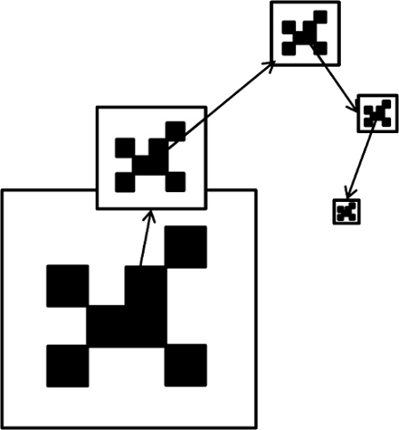
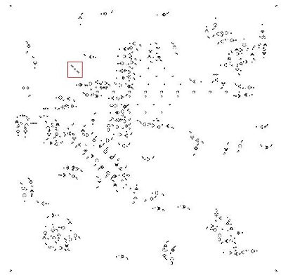
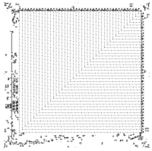
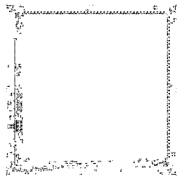

The Unit Life Cell
One of the things a computer is able to do is simulate itself. We could recreate the workings inside of our processor in a programming language like Java – it would not be very efficient, but possible!
It should not come as a surprise, then, that this idea was applied in the context of Game of Life. In Alan Hensel’s lexicon, it is defined as : "a pattern with two states, which is determined by its previous state and the previous state of its neighbors, using exactly the rules used to compute it; that is, it simulates its own universe." Two attempts have had notable success, a cell by David Bell, and the Outer Totalistic Cellular Automata Meta-Pixel by Brice Due.
David Bell’s Cell – 1996
This cell uses complex circuitry to analyze whether it should change its state according to its neighbours. After the 5760 generations which make up a cycle ( one generation in the universe simulated by this cell), the cell shoots a glider if it is still is or has become alive.
While this is undoubtedly an achievement, this cell falls short in respect to visually simulating a Game of Life universe.


OTCA metapixel – 2006 Ten years later, a different, more advanced unit cell was created by Brice Due. The 64691 cell pattern has a cycle of 35328 generations, in which it can not only simulate the Game of Life, but also any similar cellular automaton. Furthermore, its shape is very similar to the familiar square block of Life, and the ON and OFF states are easily distinguishable from each other. |
|  | On / Off states |
 |
|---|